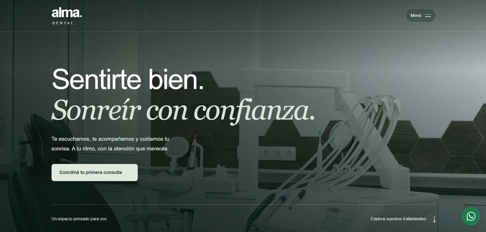

CLÍNICA ODONTOLÓGICA / DEMO
Alma Dental
Una web de estética cálida que presenta tratamientos y acompaña al visitante en su primera consulta. Incluye una solicitud de turno por pasos que prepara un mensaje para WhatsApp, además de un mapa interactivo de ubicación.
- Solicitud de turnos
- Google Maps